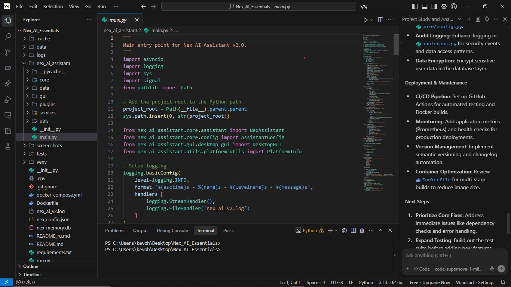
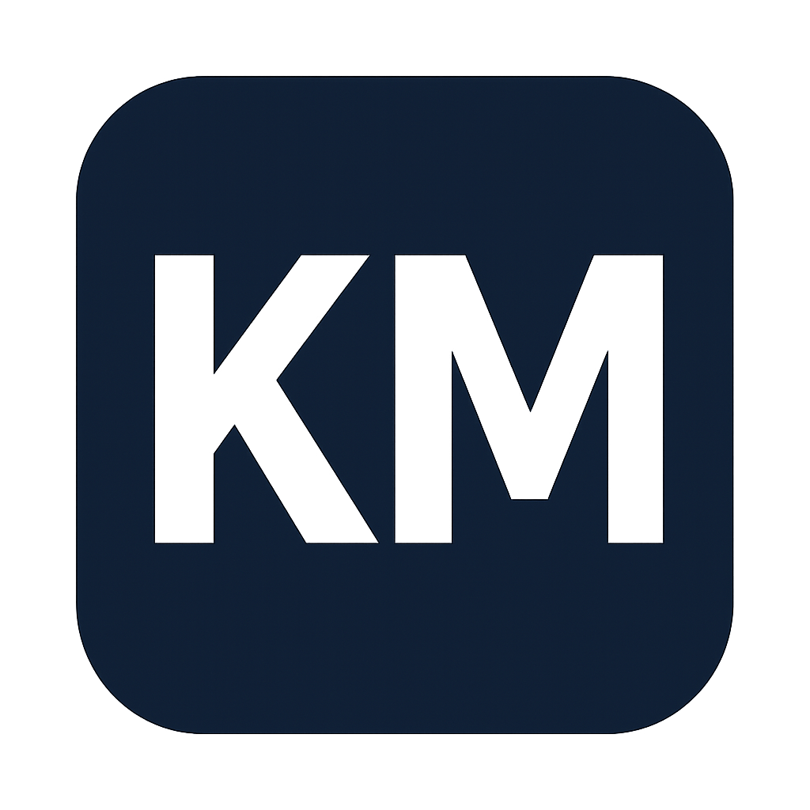

Portfolio Website
Modern portfolio experience with polished responsiveness, story-driven sections, and a strong branded presence.
HTMLCSSJavaScript
A closer look at the products, experiments, and developer tools I’ve built to solve real-world problems.

Modern portfolio experience with polished responsiveness, story-driven sections, and a strong branded presence.
A journal and reflection app built to explore secure storage, thoughtful UX, and habit-tracking workflows.

A practical resume builder for job applications with structure, templating, and optimization in mind.